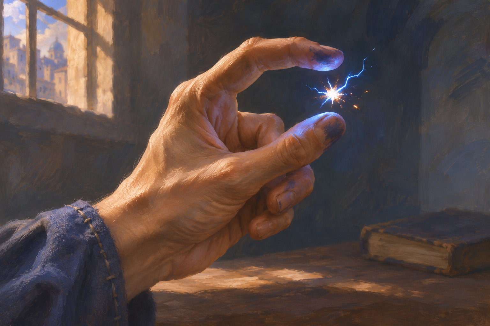

A tiny blue-white spark snaps into being between a mage’s thumb and forefinger, its light catching the ink-stained fingertips. This close-up proposes a quiet moment of learned magic for Spark, with the spell itself as the focal point.